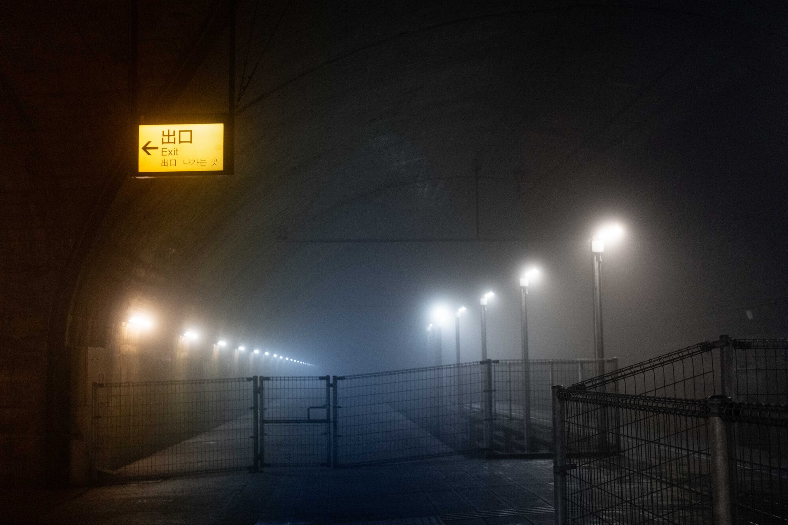
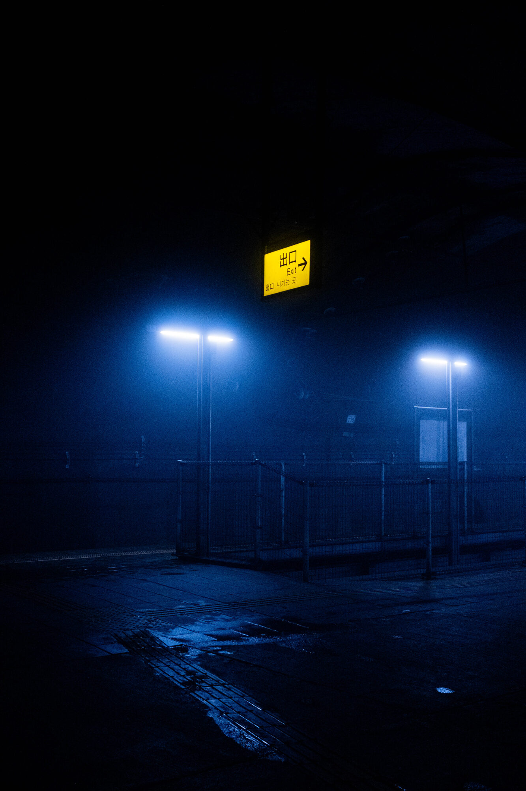
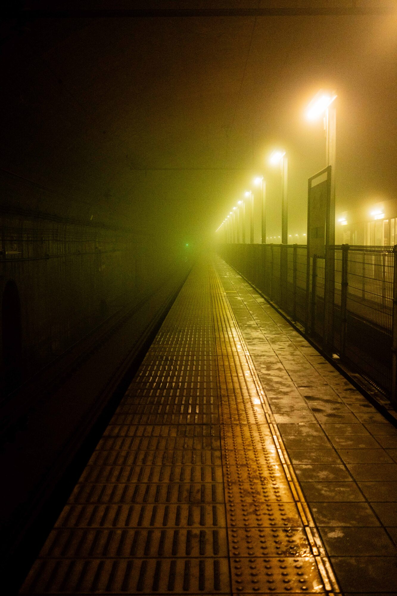
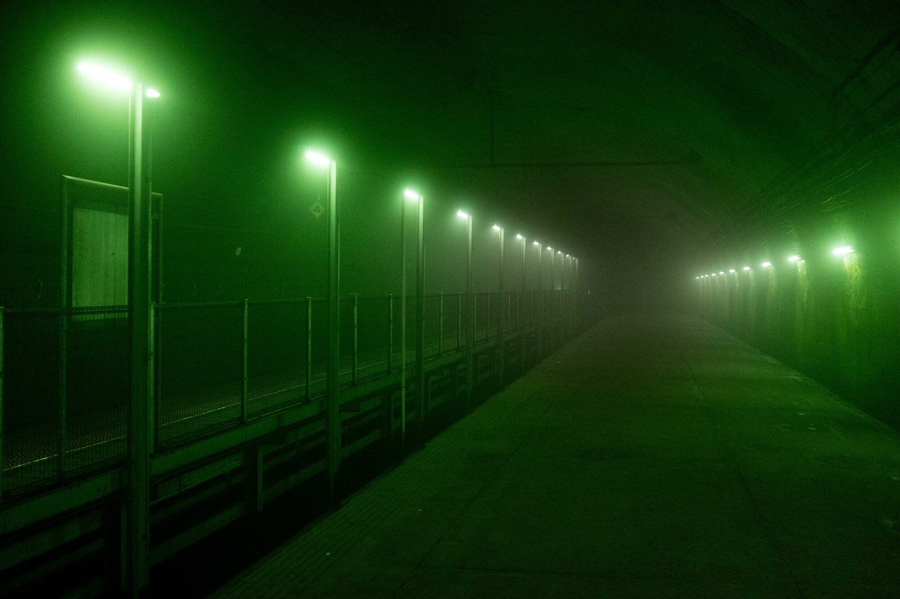
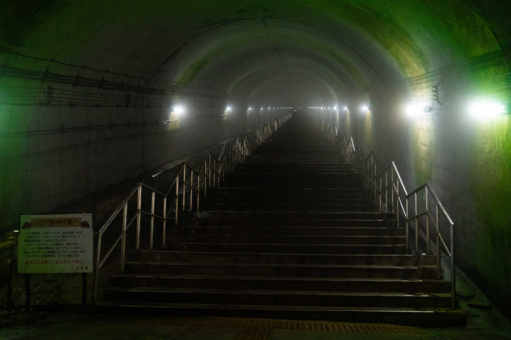

A visit to 土合駅 (Doai Station)
The deepest station in Japan, 70 meters underground.
About 8 trains a day pass through the station. Despite the summer heat, the station remains cold and foggy.




